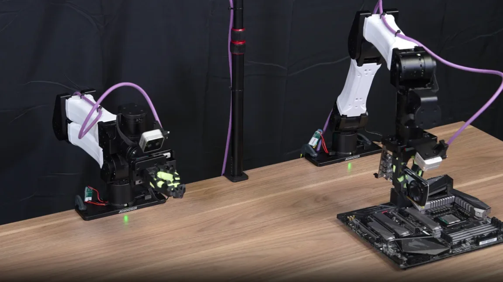
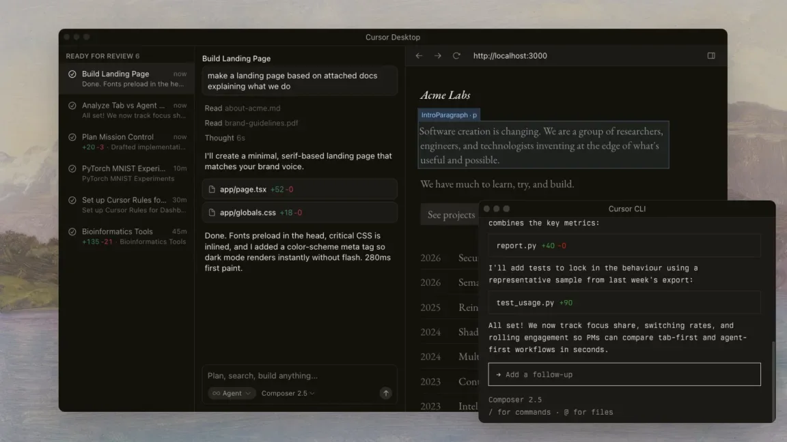
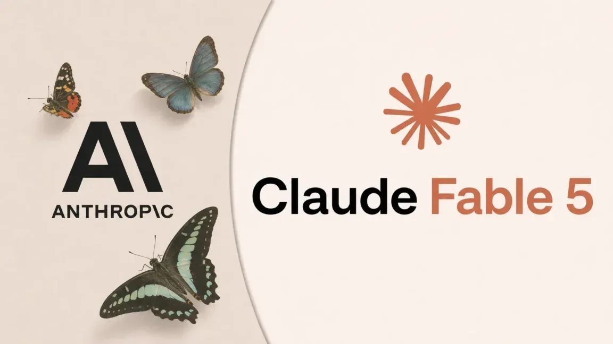
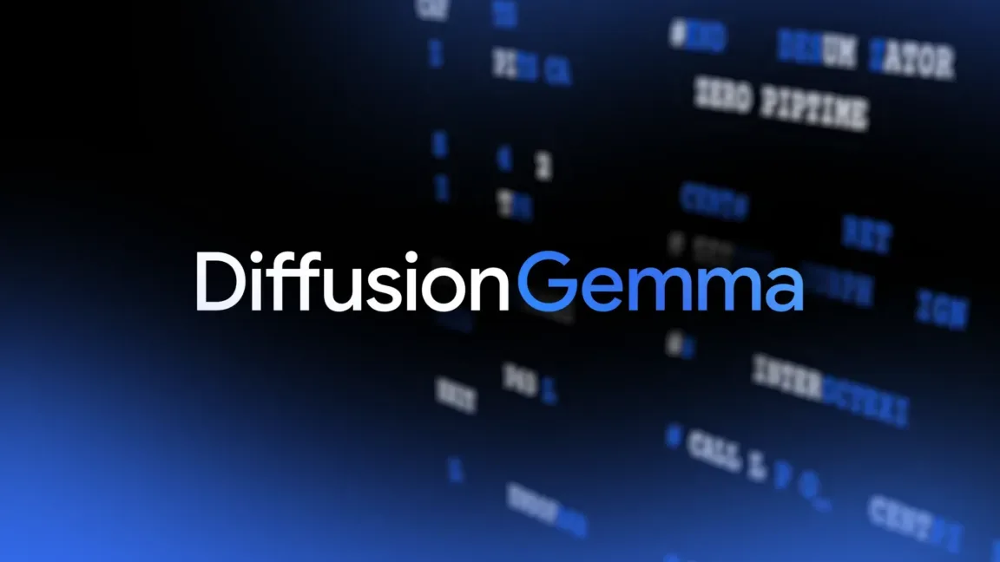
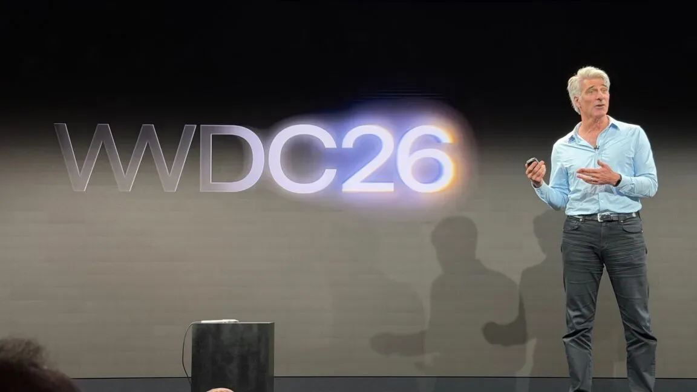
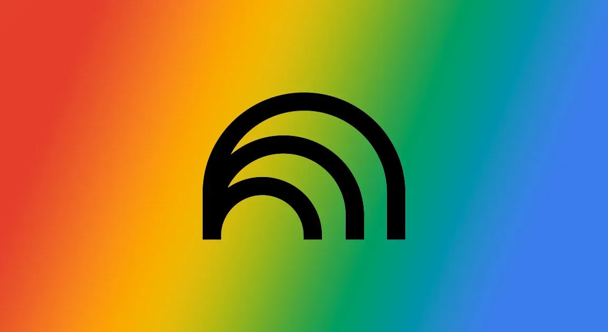
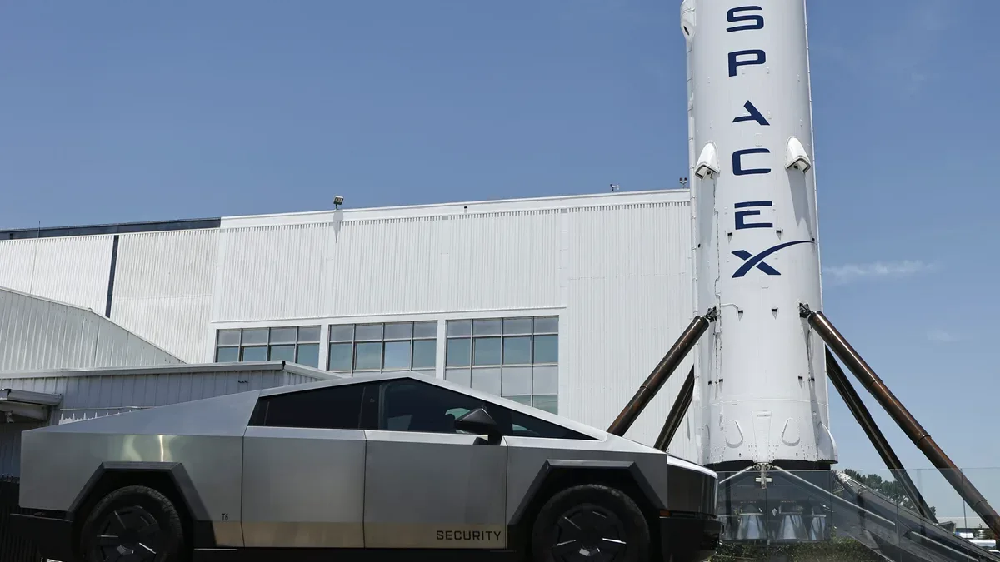
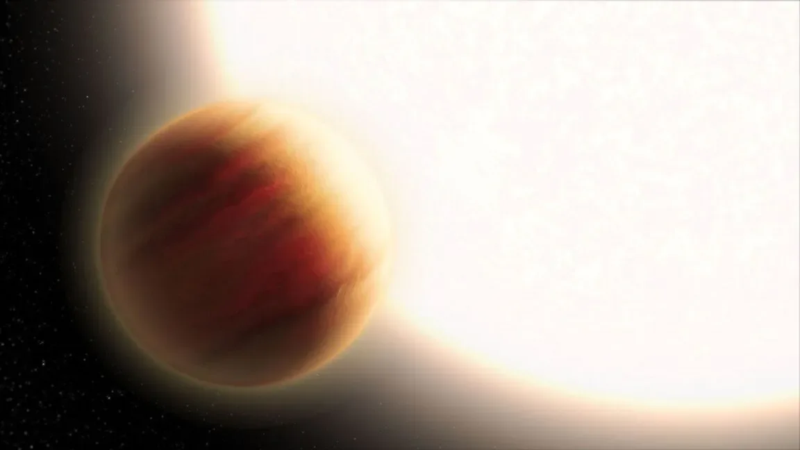
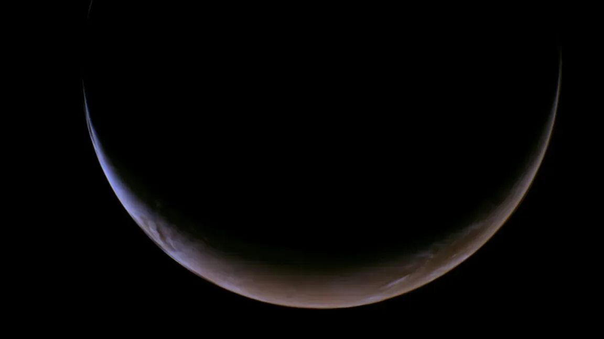
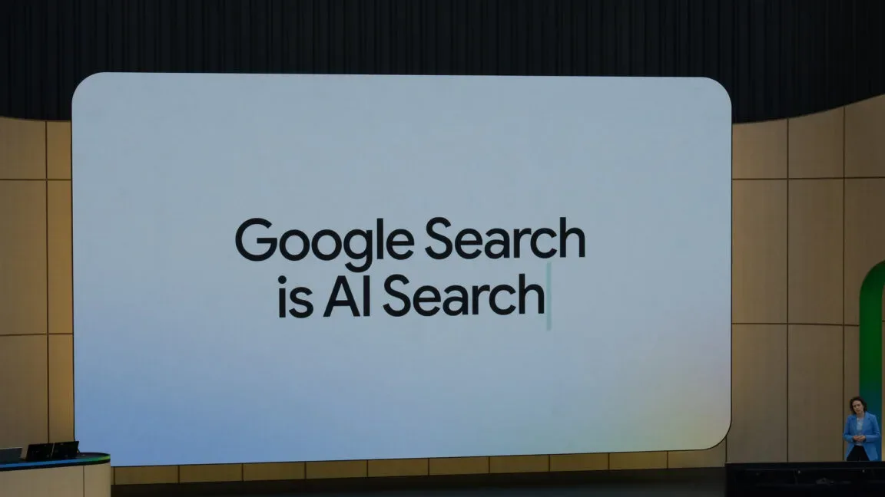

Исследования
Oracle уволила 21 000 сотрудников и наращивает долг ради ИИ-инфраструктуры
Oracle сократила 21 000 человек: ради строительства датацентров для ИИ компания берёт на себя $120 млрд долга.
Ars Technica
23 июн.Материалы из источника Ars Technica.
24 материалов
Oracle сократила 21 000 человек: ради строительства датацентров для ИИ компания берёт на себя $120 млрд долга.
Anthropic столкнулась с экспортным запретом на свою модель Mythos после споров с правительством США.

ИИ-агенты сами обучают роботов вставлять GPU и резать стяжки — без участия человека
Запретить опасный ИИ не получится: почему эксперты считают точечные ограничения бесполезными
Разработчики Claude Agent SDK получили передышку: Anthropic заморозила токенную тарификацию после волны протестов
OpenAI потратила на R&D $19 млрд при выручке $13 млрд — утечка раскрыла реальные цифры

SpaceX платит $60 млрд за ИИ-редактор кода Cursor — сделка закроется уже в третьем квартале
Пентагон заменяет 200 часов работы пятичасовым ИИ-черновиком — и никто не знает, кто проверяет точность
Один клик по ссылке — и Copilot сам отдавал почту и файлы атакующему. Как работала атака SearchLeak

Nvidia занимает $25 млрд на долговом рынке — и это сигнал о новых рисках в ИИ-финансах

Fable 5 и Mythos 5 отключены по приказу Вашингтона: что стоит за этим решением
Китайская группа использовала Gemini для создания фишинговых сайтов — Google подала иск и заблокировала миллион URL

ChatGPT поддержал недоверие суицидальной женщины к кризисным линиям. Семья подала иск против OpenAI.

Диффузионная модель Google работает в 4 раза быстрее — но у подхода есть серьёзные ограничения

Apple объяснила, как её ИИ остаётся приватным, даже работая на серверах Google

NotebookLM на Gemini 3.5 Flash: победа в 65% тестов и встроенный запуск кода через Antigravity

S&P 500 не пустил SpaceX и ИИ-компании без очереди — что это значит для их IPO
ИИ от OpenAI закрыл задачу, которую математики не могли решить с 1946 года — что именно он доказал
YouTube больше не верит авторам на слово: платформа сама будет находить ИИ-видео
SpaceX потеряла почти $5 млрд в 2025 году — и виноват в этом ИИ, а не ракеты

Телескоп JWST поймал разницу между «утром» и «вечером» на планете в 690 световых годах — и нашёл ошибку в химии экзопланет

NASA показало Марс-серп: зонд Psyche снял планету так, как с Земли не увидеть

Google строит поиск заново: вместо ссылок — живые мини-приложения на базе Gemini
Пекин запретил «урезанный» чип Nvidia прямо во время визита её CEO в Китай